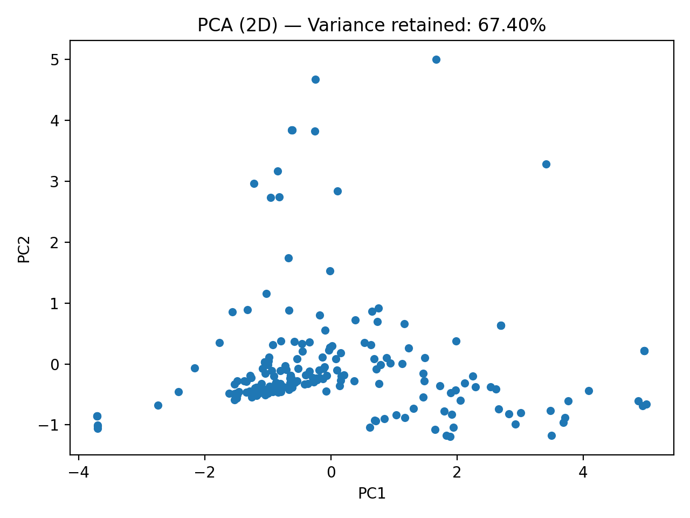
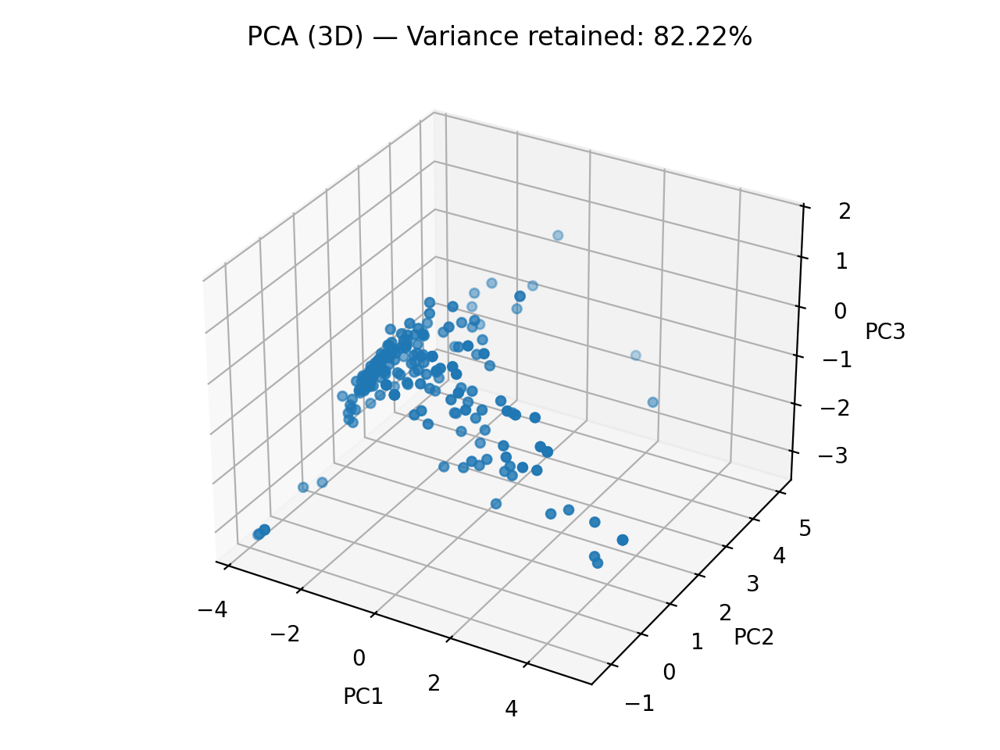
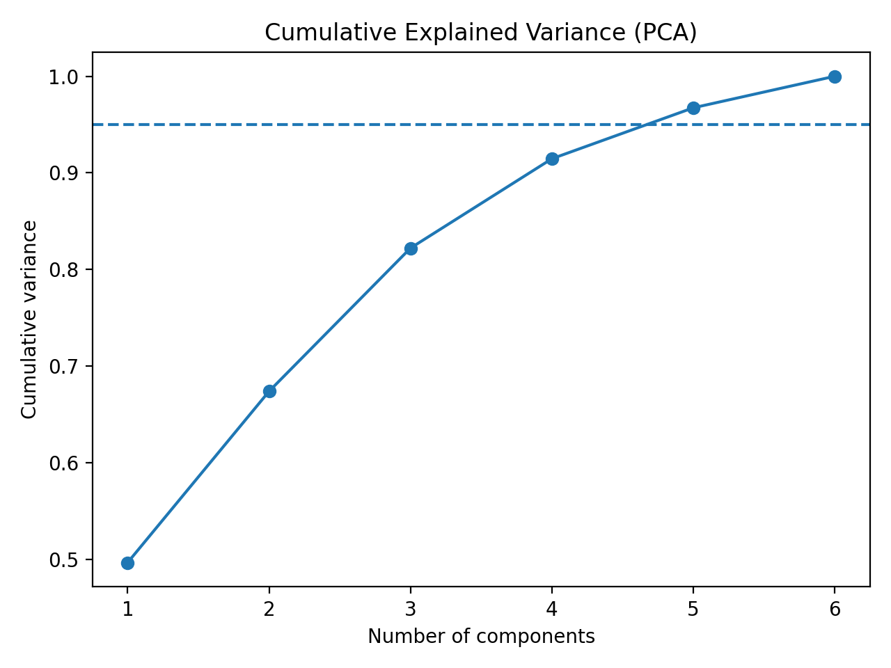

Principal Component Analysis (PCA) is a linear transformation that projects the data into a new set of orthogonal axes called principal components. Each component captures the maximum remaining variance in the data, with PC1 capturing the most, PC2 capturing the next most, and so on. PCA is useful for (1) visualization in 2D/3D, (2) understanding which directions in feature space are most important, and (3) reducing dimensionality while preserving most of the information in the dataset.
PCA requires a fully quantitative dataset with no labels. For this project, the cleaned TMDB dataset was filtered down to numeric-only features (dropping categorical columns and labels), then normalized using Sklearn StandardScaler so each feature has mean 0 and standard deviation 1.
PCA code and outputs are stored in: code/module2 and outputs/module2/pca.



67.40%, 3D retains 82.22%, and 5 components retain at
least 95% variance.
These PCA results support later steps by providing a compact representation that is easier to visualize and cluster. The reduced feature space also helps interpret which feature combinations drive the largest variation across movies.